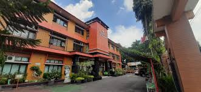

Tentang Kami
SMP Negeri 1 Tasikmalaya atau yang sering disebut Nesatta merupakan sekolah yang dirancang berlandaskan Iman dan Taqwa, budaya Lingkungan dan Sekolah Sehat, serta pusat Unggulan Bidang Akademik dan Non Akademik.
Lebih Lanjut
